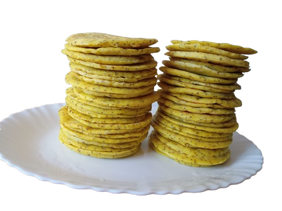

As autênticas arepas colombianas, feitas com farinha de milho sem glúten e um toque de tradição! Um alimento saudável, delicioso e perfeito para qualquer momento do dia.
🌽 Como são feitas?
Cada arepa é preparada artesanalmente com farinha de milho sem glúten, temperada com sal, pimenta, sementes de chia e cúrcuma. A massa é cuidadosamente moldada e grelhada até ficar crocante por fora e macia por dentro, resultando em um sabor único e irresistível.
💪 Benefícios Incríveis:
- ✔ 100% sem glúten – ideal para celíacos e dietas saudáveis
- ✔ Fonte de fibras e de fácil digestão
- ✔ Versatilidade para recheios doces e salgados
🍽 Como Consumir?
Experimente as arepas com nossos queijos veganos, guacamole, patê de atum ou até recheios doces como geleia de frutas!
🌍 Um toque de cultura
Na Colômbia, as arepas fazem parte da história e tradição do país, sendo apreciadas em todas as regiões! 🇨🇴